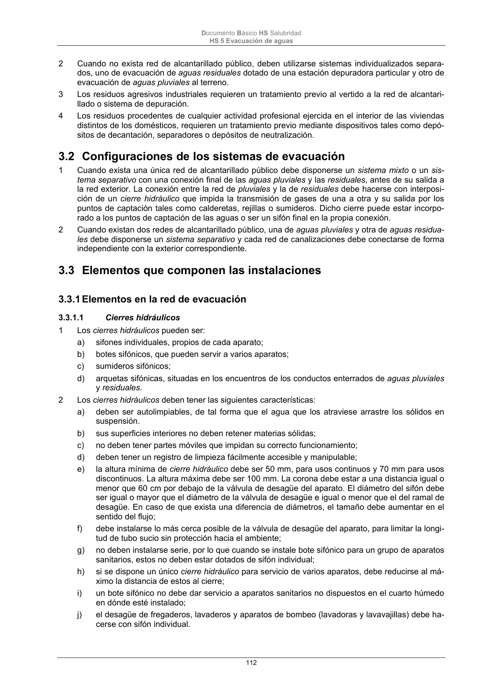

DB-HS · Fragmento de PDF p112 · versión 2022-06-14 · capa oficial
Formatos: JSON compacto · Markdown · PDF fuente
Ámbito del documento · texto del ámbito · documento y tablas
ID técnico a0257 · PDF pág. 112-114 · jerarquía no validada por persona · no es capítulo: sin_linea_de_encabezado · padre: raíz · literal original en el contenido: «3.3 Elementos que componen las instalaciones 3.3.1 Elementos en la red de evacuación»
3.3 Elementos que componen las instalaciones 3.3.1 Elementos en la red de evacuación 3.3.1 Elementos en la red de evacuación 3.3.1.1 Cierres hidráulicos 1 Los cierres hidráulicos pueden ser: a) sifones individuales, propios de cada aparato; b) botes sifónicos, que pueden servir a varios aparatos; c) sumideros sifónicos; d) arquetas sifónicas, situadas en los encuentros de los conductos enterrados de aguas pluviales y residuales. 2 Los cierres hidráulicos deben tener las siguientes características: a) deben ser autolimpiables, de tal forma que el agua que los atraviese arrastre los sólidos en suspensión. b) sus superficies interiores no deben retener materias sólidas; c) no deben tener partes móviles que impidan su correcto funcionamiento; d) deben tener un registro de limpieza fácilmente accesible y manipulable; e) la altura mínima de cierre hidráulico debe ser 50 mm, para usos continuos y 70 mm para usos discontinuos. La altura máxima debe ser 100 mm. La corona debe estar a una distancia igual o menor que 60 cm por debajo de la válvula de desagüe del aparato. El diámetro del sifón debe ser igual o mayor que el diámetro de la válvula de desagüe e igual o menor que el del ramal de desagüe. En caso de que exista una diferencia de diámetros, el tamaño debe aumentar en el sentido del flujo; f) debe instalarse lo más cerca posible de la válvula de desagüe del aparato, para limitar la longi- tud de tubo sucio sin protección hacia el ambiente; g) no deben instalarse serie, por lo que cuando se instale bote sifónico para un grupo de aparatos sanitarios, estos no deben estar dotados de sifón individual; h) si se dispone un único cierre hidráulico para servicio de varios aparatos, debe reducirse al má- ximo la distancia de estos al cierre; i) un bote sifónico no debe dar servicio a aparatos sanitarios no dispuestos en el cuarto húmedo en dónde esté instalado; j) el desagüe de fregaderos, lavaderos y aparatos de bombeo (lavadoras y lavavajillas) debe ha- cerse con sifón individual. Documento Básico HS Salubridad HS 5 Evacuación de aguas 113 3.3.1.2 Redes de pequeña evacuación 1 Las redes de pequeña evacuación deben diseñarse conforme a los siguientes criterios: a) el trazado de la red debe ser lo más sencillo posible para conseguir una circulación natural por gravedad, evitando los cambios bruscos de dirección y utilizando las piezas especiales ade- cuadas; b) deben conectarse a las bajantes; cuando por condicionantes del diseño esto no fuera posible, se permite su conexión al manguetón del inodoro; c) la distancia del bote sifónico a la bajante no debe ser mayor que 2,00 m; d) las derivaciones que acometan al bote sifónico deben tener una longitud igual o menor que 2,50 m, con una pendiente comprendida entre el 2 y el 4 %; e) en los aparatos dotados de sifón individual deben tener las características siguientes: i) en los fregaderos, los lavaderos, los lavabos y los bidés la distancia a la bajante debe ser 4,00 m como máximo, con pendientes comprendidas entre un 2,5 y un 5 %; ii) en las bañeras y las duchas la pendiente debe ser menor o igual que el 10 %; iii) el desagüe de los inodoros a las bajantes debe realizarse directamente o por medio de un manguetón de acometida de longitud igual o menor que 1,00 m, siempre que no sea po- sible dar al tubo la pendiente necesaria. f) debe disponerse un rebosadero en los lavabos, bidés, bañeras y fregaderos; g) no deben disponerse desagües enfrentados acometiendo a una tubería común; h) las uniones de los desagües a las bajantes deben tener la mayor inclinación posible, que en cualquier caso no debe ser menor que 45º; i) cuando se utilice el sistema de sifones individuales, los ramales de desagüe de los aparatos sanitarios deben unirse a un tubo de derivación, que desemboque en la bajante o si esto no fuera posible, en el manguetón del inodoro, y que tenga la cabecera registrable con tapón ros- cado; j) excepto en instalaciones temporales, deben evitarse en estas redes los desagües bombeados. 3.3.1.3 Bajantes y canalones 1 Las bajantes deben realizarse sin desviaciones ni retranqueos y con diámetro uniforme en toda su altura excepto, en el caso de bajantes de residuales, cuando existan obstáculos insalvables en su recorrido y cuando la presencia de inodoros exija un diámetro concreto desde los tramos superiores que no es superado en el resto de la bajante. 2 El diámetro no debe disminuir en el sentido de la corriente. 3 Podrá disponerse un aumento de diámetro cuando acometan a la bajante caudales de magnitud mucho mayor que los del tramo situado aguas arriba. 3.3.1.4 Colectores 1 Los colectores pueden disponerse colgados o enterrados. 3.3.1.4.1 Colectores colgados 1 Las bajantes deben conectarse mediante piezas especiales, según las especificaciones técnicas del material. No puede realizarse esta conexión mediante simples codos, ni en el caso en que estos sean reforzados. 2 La conexión de una bajante de aguas pluviales al colector en los sistemas mixtos, debe disponerse separada al menos 3 m de la conexión de la bajante más próxima de aguas residuales situada aguas arriba. 3 Deben tener una pendiente del 1% como mínimo. 4 No deben acometer en un mismo punto más de dos colectores. 5 En los tramos rectos, en cada encuentro o acoplamiento tanto en horizontal como en vertical, así como en las derivaciones, deben disponerse registros constituidos por piezas especiales, según el material del que se trate, de tal manera que los tramos entre ellos no superen los 15 m. Documento Básico HS Salubridad HS 5 Evacuación de aguas 114 3.3.1.4.2 Colectores enterrados 1 Los tubos deben disponerse en zanjas de dimensiones adecuadas, tal y como se establece en el apartado 5.4.3., situados por debajo de la red de distribución de agua potable. 2 Deben tener una pendiente del 2 % como mínimo. 3 La acometida de las bajantes y los manguetones a esta red se hará con interposición de una arque- ta de pie de bajante, que no debe ser sifónica. 4 Se dispondrán registros de tal manera que los tramos entre los contiguos no superen 15 m. 3.3.1.5 Elementos de conexión 1 En redes enterradas la unión entre las redes vertical y horizontal y en ésta, entre sus encuentros y derivaciones, debe realizarse con arquetas dispuestas sobre cimiento de hormigón, con tapa practi- cable. Sólo puede acometer un colector por cada cara de la arqueta, de tal forma que el ángulo formado por el colector y la salida sea mayor que 90º. 2 Deben tener las siguientes características: a) la arqueta a pie de bajante debe utilizarse para registro al pie de las bajantes cuando la con- ducción a partir de dicho punto vaya a quedar enterrada; no debe ser de tipo sifónico; b) en las arquetas de paso deben acometer como máximo tres colectores; c) las arquetas de registro debendisponer de tapa accesible y practicable; d) la arqueta de trasdós debe disponerse en caso de llegada al pozo general del edificio de más de un colector; e) el separador de grasas debe disponerse cuando se prevea que las aguas residuales del edifi- cio puedan transportar una cantidad excesiva de grasa, (en locales tales como restaurantes, garajes, etc.), o de líquidos combustibles que podría dificultar el buen funcionamiento de los sistemas de depuración, o crear un riesgo en el sistema de bombeo y elevación. Puede utilizarse como arqueta sifónica. Debe estar provista de una abertura de ventilación, próxima al lado de descarga, y de una tapa de registro totalmente accesible para las precepti- vas limpiezas periódicas. Puede tener más de un tabique separador. Si algún aparato descar- gara de forma directa en el separador, debe estar provisto del correspondiente cierre hidráuli- co. Debe disponerse preferiblemente al final de la red horizontal, previo al pozo de resalto y a la acometida. Salvo en casos justificados, al separador de grasas sólo deben verter las aguas afectadas de forma directa por los mencionados residuos. (grasas, aceites, etc.) 3 Al final de la instalación y antes de la acometida debe disponerse el pozo general del edificio. 4 Cuando la diferencia entre la cota del extremo final de la instalación y la del punto de acometida sea mayor que 1 m, debe disponerse un pozo de resalto como elemento de conexión de la red interior de evacuación y de la red exterior de alcantarillado o los sistemas de depuración. 5 Los registros para limpieza de colectores deben situarse en cada encuentro y cambio de dirección e intercalados en tramos rectos.

PDF fuente redistribuible: copia fiel enlazada en esta página (SHA256 verificado).